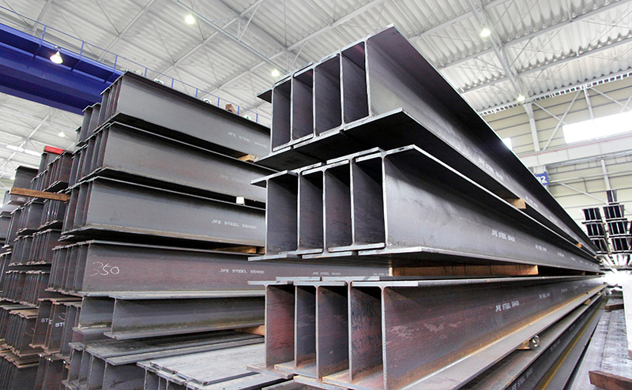
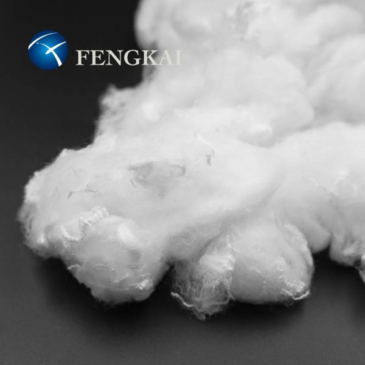
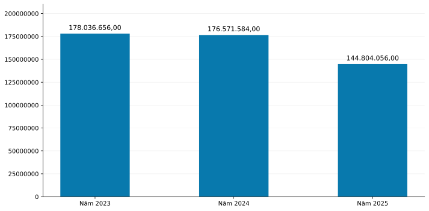
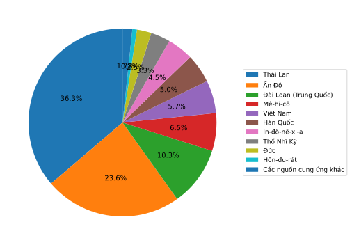
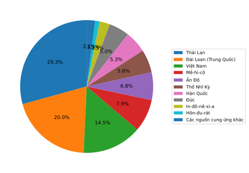
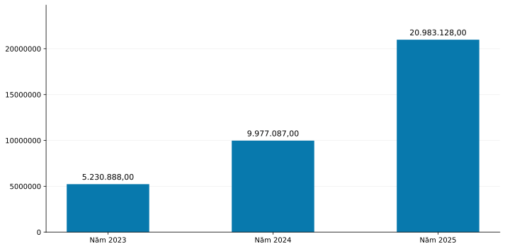
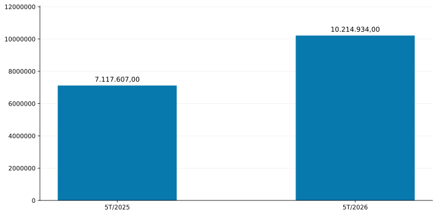

♦ Thông báo tiếp nhận hồ sơ yêu cầu rà soát biện pháp chống bán phá giá đối với một số sản phẩm thép hình chữ H có xuất xứ từ Cộng hòa nhân dân Trung Hoa


♦ Tình hình xuất khẩu mặt hàng xơ sợi polyester có đường kính nhỏ hơn 3 denier vào thị trường Hoa Kỳ
Thông báo tiếp nhận hồ sơ yêu cầu rà soát biện pháp chống bán phá giá đối với một số sản phẩm thép hình chữ H có xuất xứ từ Cộng hòa nhân dân Trung Hoa
Cục Phòng vệ thương mại (Cơ quan điều tra) thông báo tiếp nhận hồ sơ yêu cầu rà soát việc áp dụng biện pháp chống bán phá giá đối với một số sản phẩm thép hình chữ H có xuất xứ từ Cộng hòa nhân dân Trung Hoa.
Trước đó, ngày 19/8/2022, Bộ Công Thương đã ban hành Quyết định số 1640/QĐ-BCT về kết quả rà soát cuối kỳ việc áp dụng biện pháp chống bán phá giá đối với một số sản phẩm thép hình chữ H có xuất xứ từ Cộng hòa nhân dân Trung Hoa.
Căn cứ quy định tại Điều 51 Nghị định số 86/2025/NĐ-CP, Cục Phòng vệ thương mại tiếp nhận hồ sơ yêu cầu rà soát theo đề nghị của các bên liên quan đối với biện pháp chống bán phá giá đang được áp dụng đối với sản phẩm nêu trên.
Theo quy định tại Điều 56 Nghị định số 86/2025/NĐ-CP, các bên liên quan có quyền nộp hồ sơ yêu cầu rà soát. Hồ sơ đề nghị rà soát phải đáp ứng đầy đủ các yêu cầu về nội dung, thông tin và tài liệu theo quy định tại Điều 57 Nghị định số 86/2025/NĐ-CP.
Thời hạn tiếp nhận hồ sơ chậm nhất là ngày 06/8/2026.
Hồ sơ đề nghị rà soát đề nghị gửi về:
Cục Phòng vệ thương mại – Bộ Công Thương
Địa chỉ: 54 Hai Bà Trưng, phường Cửa Nam, thành phố Hà Nội.
TIN TRONG NƯỚC
Ban hành Bản câu hỏi điều tra vụ việc rà soát cuối kỳ áp dụng biện pháp chống bán phá giá đối với một số sản phẩm vật liệu hàn (mã vụ việc: ER01.AD15)
Ngày 19/6/2026, Bộ trưởng Bộ Công Thương đã ban hành Quyết định số 1453/QĐ-BCT và Thông báo kèm theo về việc rà soát cuối kỳ áp dụng biện pháp chống bán phá giá đối với một số sản phẩm vật liệu hàn có xuất xứ từ Ma-lai-xi-a, Vương quốc Thái Lan và Cộng hòa nhân dân Trung Hoa (mã vụ việc: ER01.AD15).
Để phục vụ quá trình điều tra, Cục Phòng vệ thương mại đã ban hành Bản câu hỏi điều tra dành cho các nhà sản xuất trong nước và các nhà nhập khẩu nhằm thu thập thông tin, số liệu phục vụ việc xem xét, đánh giá vụ việc.
Một số nội dung cần lưu ý như sau:
- Bản câu hỏi điều tra được đăng tải trên Hệ thống tiếp nhận hồ sơ phòng vệ thương mại (online.trav.gov.vn), Cổng thông tin điện tử của Cục Phòng vệ thương mại (www.pvtm.gov.vn) và Cổng thông tin điện tử Bộ Công Thương (www.moit.gov.vn);
- Thời hạn nộp Bản trả lời câu hỏi: trước 17 giờ 00 ngày 13/8/2026 (theo giờ Hà Nội);
- Hướng dẫn về nội dung, hình thức, số lượng hồ sơ và phương thức nộp được quy định tại Phụ lục 3 và các tài liệu kèm theo Bản câu hỏi điều tra.
Để bảo đảm quyền và lợi ích hợp pháp của mình, Cơ quan điều tra khuyến nghị các bên liên quan hợp tác đầy đủ trong suốt quá trình điều tra. Thông tin, số liệu do các bên cung cấp trong Bản trả lời câu hỏi là một trong những căn cứ quan trọng để Cơ quan điều tra xem xét, đưa ra kết luận của vụ việc. Trong quá trình điều tra, Cơ quan điều tra có thể tiến hành kiểm tra, xác minh tính chính xác của các thông tin, tài liệu đã cung cấp hoặc thu thập bổ sung các thông tin cần thiết, bao gồm việc thực hiện điều tra, xác minh tại chỗ theo quy định.
Trường hợp các bên liên quan không nộp Bản trả lời câu hỏi đúng thời hạn hoặc cung cấp thông tin không đầy đủ, không chính xác theo yêu cầu, Cơ quan điều tra sẽ xử lý theo quy định tại Điều 9 Nghị định số 86/2025/NĐ-CP về việc không hợp tác trong vụ việc phòng vệ thương mại.
Cơ quan điều tra đề nghị các doanh nghiệp nghiên cứu kỹ hướng dẫn trong Bản câu hỏi trước khi trả lời và gửi Bản trả lời đúng thời hạn để bảo đảm quyền và lợi ích của mình trong quá trình xử lý vụ việc.
TIN NƯỚC NGOÀI
Ấn Độ khởi xướng điều tra chống bán phá giá đối với xe đầu kéo vận chuyển hàng hóa chạy điện nhập khẩu từ Trung Quốc
Tổng cục Phòng vệ thương mại Ấn Độ (DGTR) đã khởi xướng điều tra chống bán phá giá đối với sản phẩm xe đầu kéo vận chuyển hàng hóa chạy điện có cấu hình trục 6x4 và 4x2 có xuất xứ hoặc được xuất khẩu từ Trung Quốc. Vụ việc được khởi xướng trên cơ sở đơn yêu cầu của Công ty IPLTech Electric Pvt Ltd, với cáo buộc rằng hàng hóa nhập khẩu từ Trung Quốc được bán phá giá và gây thiệt hại đáng kể cho ngành sản xuất trong nước.
Theo DGTR, Công ty IPLTech Electric Pvt Ltd là nhà sản xuất lớn đối với sản phẩm tương tự tại Ấn Độ và đáp ứng đầy đủ các điều kiện về tư cách đại diện của ngành sản xuất trong nước theo quy định của pháp luật chống bán phá giá. DGTR cũng xác định Công ty IPLTech Electric Pvt Ltd chiếm tỷ trọng đáng kể trong tổng sản lượng sản phẩm tương tự của Ấn Độ trong giai đoạn điều tra.
Sản phẩm thuộc phạm vi điều tra là xe đầu kéo vận chuyển hàng hóa chạy điện sử dụng trong hoạt động logistics và vận tải hàng hóa, không bao gồm xe đầu kéo sử dụng trong lĩnh vực nông nghiệp. Phạm vi điều tra bao gồm các sản phẩm được nhập khẩu dưới dạng nguyên chiếc (CBU), bộ linh kiện hoàn chỉnh (CKD) và bộ linh kiện bán hoàn chỉnh (SKD), trong khi các linh kiện nhập khẩu riêng lẻ không thuộc đối tượng điều tra.
Theo thông báo của DGTR, sản phẩm thuộc phạm vi điều tra là xe đầu kéo chạy điện được sử dụng trong hoạt động logistics và vận chuyển hàng hóa như xi măng, thép, hàng tiêu dùng nhanh (FMCG), hàng hóa đóng gói và vật liệu xây dựng giữa các nhà máy sản xuất, kho bãi, trung tâm phân phối, cảng, bến hàng và các điểm giao nhận.
DGTR cho biết các thông tin, chứng cứ do nguyên đơn cung cấp đã cho thấy có căn cứ ban đầu để xác định rằng hàng hóa nhập khẩu từ Trung Quốc có dấu hiệu bán phá giá gây thiệt hại đáng kể cho ngành sản xuất trong nước và tồn tại mối quan hệ nhân quả giữa hàng hóa nhập khẩu bị báo buộc bán phá giá với thiệt hại của ngành sản xuất trong nước. Trên cơ sở đó, DGTR quyết định khởi xướng điều tra nhằm xác định có hay không hành vi bán phá giá, mức độ bán phá giá, thiệt hại đối với ngành sản xuất trong nước, đồng thời xem xét việc áp dụng biện pháp chống bán phá giá nếu kết quả điều tra cho thấy đáp ứng đầy đủ các điều kiện theo quy định.
Giai đoạn điều tra hành vi bán phá giá được xác định từ ngày 01/01/2025 đến ngày 31/12/2025, trong khi giai đoạn xem xét thiệt hại bắt đầu từ ngày 01/4/2023. DGTR đã mời các bên liên quan đăng ký tham gia vụ việc thông qua Cổng thông tin SETU và cung cấp thông tin trong thời hạn quy định để phục vụ quá trình điều tra.
Tổng hợp từ autocarpro.in
TIN NƯỚC NGOÀI
Vương quốc Anh gia hạn thuế chống trợ cấp đối với nhiên liệu sinh học nhập khẩu từ In-đô-nê-xi-a đến năm 2029
Chính phủ Vương quốc Anh đã quyết định tiếp tục áp dụng thuế chống trợ cấp đối với sản phẩm nhiên liệu sinh học (biodiesel) nhập khẩu từ In-đô-nê-xi-a đến ngày 10/12/2029, đồng thời loại trừ nhiên liệu hàng không bền vững (Sustainable Aviation Fuel - SAF) khỏi phạm vi áp dụng biện pháp. Quyết định được ban hành ngày 02/7/2026 và có hiệu lực từ ngày 03/7/2026, trên cơ sở khuyến nghị của Cơ quan Phòng vệ thương mại Vương quốc Anh (Trade Remedies Authority - TRA).
Theo quyết định mới, thuế chống trợ cấp tiếp tục được áp dụng đối với nhiên liệu sinh học có nguồn gốc từ nguyên liệu phi hóa thạch, bao gồm este metyl axit béo (Fatty Acid Methyl Esters - FAME) và dầu thực vật hydro hóa (Hydrotreated Vegetable Oil - HVO), dù được nhập khẩu ở dạng nguyên chất hay đã pha trộn với các loại nhiên liệu khác. Riêng SAF được loại khỏi phạm vi áp dụng do TRA xác định sản phẩm này không phải là "sản phẩm tương tự" với nhiên liệu sinh học truyền thống, xét trên các tiêu chí về quy trình sản xuất, nguyên liệu đầu vào, mục đích sử dụng và nhóm khách hàng.
Mức thuế chống trợ cấp đối với các doanh nghiệp xuất khẩu của In-đô-nê-xi-a được giữ nguyên so với trước đây và dao động từ 8% đến 18%. Cụ thể, Ciliandra Perkasa chịu mức thuế 8%; Tập đoàn Wilmar chịu mức 15,7%; Tập đoàn Musim Mas chịu mức 16,3%; trong khi Tập đoàn Permata và các doanh nghiệp khác không được xác định riêng phải chịu mức thuế 18%.
In-đô-nê-xi-a hiện là quốc gia sản xuất và xuất khẩu dầu cọ lớn nhất thế giới, trong đó dầu cọ là nguyên liệu chủ yếu phục vụ sản xuất nhiên liệu sinh học. Trong những năm gần đây, ngành nhiên liệu sinh học của nước này liên tục đối mặt với các vụ việc phòng vệ thương mại tại nhiều thị trường xuất khẩu liên quan đến cáo buộc trợ cấp và các vấn đề về môi trường. Để nâng cao giá trị gia tăng của ngành dầu cọ, Chính phủ In-đô-nê-xi-a đang thúc đẩy phát triển các sản phẩm nhiên liệu tái tạo có giá trị cao, đặc biệt là nhiên liệu hàng không bền vững (SAF).
Bất chấp những rào cản thương mại, xuất khẩu dầu cọ của In-đô-nê-xi-a vẫn duy trì đà tăng trưởng. Theo số liệu của Cơ quan Thống kê Trung ương In-đô-nê-xi-a (BPS), trong 5 tháng đầu năm 2026, kim ngạch xuất khẩu các sản phẩm dầu cọ đạt 9,59 tỷ USD, tăng 7,7% so với cùng kỳ năm 2025; khối lượng xuất khẩu đạt 8,92 triệu tấn, tăng 7,4% so với mức 8,30 triệu tấn của cùng kỳ năm trước.
Tổng hợp từ jakartaglobe.id
TIN NƯỚC NGOÀI
Úc áp dụng biện pháp chống bán phá giá tạm thời đối với thép cán phẳng nhập khẩu từ Trung Quốc và Hàn Quốc
Ủy ban Chống bán phá giá Úc (ADC) đã ban hành kết luận sơ bộ, xác định có đủ căn cứ để áp dụng biện pháp chống bán phá giá tạm thời đối với một số sản phẩm thép cán phẳng nhập khẩu từ Trung Quốc và Hàn Quốc. Đồng thời, ADC cũng quyết định áp dụng biện pháp chống trợ cấp tạm thời đối với các sản phẩm có xuất xứ từ Trung Quốc.
Trên cơ sở kết luận sơ bộ của ADC, kể từ ngày 24/6/2026, Úc áp dụng các biện pháp phòng vệ thương mại tạm thời dưới hình thức ký quỹ đối với hàng hóa thuộc phạm vi điều tra. Sản phẩm bị điều tra được phân loại theo các mã HS 7208.40.00.39, 7208.51.00.40, 7208.52.00.41, 7208.90.00.30, 7225.40.00.22 và 7225.40.00.24.
Đối với hàng hóa có xuất xứ từ Trung Quốc, ADC xác định mức thuế chống bán phá giá tạm thời từ 9,4% đến 51,2%, và mức thuế chống trợ cấp tạm thời dao động từ 0% đến 4,5%, tùy theo từng nhà sản xuất, xuất khẩu. Đối với hàng hóa có xuất xứ từ Hàn Quốc, ADC áp dụng mức thuế chống bán phá giá tạm thời thống nhất là 21,6%.
Theo ADC, vụ việc được khởi xướng vào tháng 10/2025 trên cơ sở đơn yêu cầu của Công ty BlueScope Steel, doanh nghiệp đại diện cho ngành sản xuất thép trong nước. Giai đoạn điều tra được xác định từ ngày 01/7/2024 đến ngày 30/6/2025. Theo kế hoạch, ADC sẽ hoàn tất báo cáo và trình kiến nghị cuối cùng lên các bộ, ngành có thẩm quyền xem xét trước ngày 07/8/2026.
Đáng chú ý, trong tháng 6/2026, Ấn Độ cũng đã khởi xướng điều tra chống bán phá giá đối với sản phẩm thép phẳng cán nóng có xuất xứ hoặc được xuất khẩu từ Trung Quốc, Nhật Bản và Liên bang Nga. Động thái này cho thấy xu hướng gia tăng sử dụng các công cụ phòng vệ thương mại trong ngành thép nhằm bảo vệ ngành sản xuất trong nước trước áp lực cạnh tranh từ hàng hóa nhập khẩu, trong bối cảnh tình trạng dư thừa công suất thép toàn cầu vẫn tiếp diễn.
Tổng hợp từ seaisi.org
TIN NƯỚC NGOÀI
EU chính thức áp dụng thuế chống bán phá giá đối với lốp xe ô tô con và xe tải nhẹ nhập khẩu từ Trung Quốc
Ngày 07/7/2026, Ủy ban châu Âu (EC) đã ban hành Quyết định áp dụng thuế chống bán phá giá đối với sản phẩm lốp xe ô tô con và xe tải nhẹ có xuất xứ từ Trung Quốc. Theo đó, mức thuế chống bán phá giá được áp dụng dao động từ 4,3% đến 45,3%, tùy theo từng nhà sản xuất, xuất khẩu của Trung Quốc.
Việc áp dụng biện pháp trên được đưa ra sau khi EC hoàn tất điều tra và kết luận rằng sản phẩm lốp xe ô tô con và xe tải nhẹ nhập khẩu từ Trung Quốc đã được bán phá giá tại thị trường Liên minh châu Âu (EU), gây thiệt hại đáng kể cho ngành sản xuất lốp xe của EU. Theo EC, ngành sản xuất này hiện tạo việc làm cho hơn 80.000 lao động tại 14 quốc gia thành viên EU.
Sản phẩm thuộc phạm vi điều tra bao gồm nhiều chủng loại và kích cỡ lốp khí nén bằng cao su dành cho xe ô tô con và xe tải nhẹ, có chỉ số tải trọng dưới 121.
Theo số liệu của EC, năm 2024, tổng nhu cầu tiêu thụ các sản phẩm thuộc phạm vi điều tra tại thị trường EU đạt khoảng 330 triệu chiếc, với quy mô thị trường ước tính trên 18 tỷ EUR. Trong cùng năm, lượng lốp xe nhập khẩu từ Trung Quốc đạt gần 93 triệu chiếc, trị giá hơn 2,5 tỷ EUR, chiếm khoảng 28% thị phần tại EU. Ngoài vụ việc chống bán phá giá, EC cũng đang tiến hành điều tra chống trợ cấp đối với cùng sản phẩm. Theo kế hoạch, cuộc điều tra sẽ được hoàn tất vào tháng 12/2026.
Tổng hợp từ policy.trade.ec.europa.eu
TIN NƯỚC NGOÀI
Hoa Kỳ duy trì lệnh áp thuế chống bán phá giá đối với cà chua tươi nhập khẩu từ Mê-hi-cô
Ủy ban Thương mại Quốc tế Hoa Kỳ (USITC) đã bỏ phiếu quyết định tiếp tục duy trì lệnh áp thuế chống bán phá giá đối với sản phẩm cà chua tươi nhập khẩu từ Mê-hi-cô, đồng thời bác bỏ đề nghị chấm dứt biện pháp này.
Quyết định trên đồng nghĩa với việc lệnh áp thuế chống bán phá giá hiện hành sẽ tiếp tục có hiệu lực, qua đó duy trì các biện pháp bảo vệ thương mại đối với ngành sản xuất cà chua trong nước của Hoa Kỳ.
Hiệp hội Cà chua Florida cho rằng quyết định này một lần nữa khẳng định kết luận trước đây của các cơ quan chức năng Hoa Kỳ về việc cà chua nhập khẩu từ Mê-hi-cô được bán trên thị trường Hoa Kỳ với mức giá cạnh tranh không công bằng.
Bên cạnh đó, các tổ chức nông nghiệp của Hoa Kỳ cũng bày tỏ quan điểm về việc Hoa Kỳ, Mê-hi-cô và Ca-na-đa chính thức khởi động đợt rà soát chung đầu tiên đối với Hiệp định Hoa Kỳ - Mê-hi-cô - Ca-na-đa (USMCA).
Bà Shawna Morris, Phó Chủ tịch Hội đồng Xuất khẩu Sữa Hoa Kỳ (U.S. Dairy Export Council), cho biết việc rà soát và thực thi hiệu quả USMCA có ý nghĩa đặc biệt quan trọng đối với ngành sữa Hoa Kỳ, khi hơn 40% kim ngạch xuất khẩu sữa của nước này được tiêu thụ tại thị trường Ca-na-đa và Mê-hi-cô.
USMCA cũng được đánh giá là hiệp định có vai trò quan trọng đối với hoạt động xuất khẩu thịt lợn của Hoa Kỳ. Tuy nhiên, Chính quyền Tổng thống Donald Trump đã quyết định không chấp thuận việc gia hạn hiệp định theo các điều khoản hiện hành.
Theo báo cáo mới nhất của Liên minh Nông dân Quốc gia Hoa Kỳ (National Farmers Union - NFU), nông dân chỉ nhận được khoảng 11,8 xu trong mỗi 1 USD mà người tiêu dùng chi cho thực phẩm. Báo cáo cũng chỉ ra khoảng cách ngày càng lớn giữa giá bán lẻ thực phẩm và phần thu nhập mà người sản xuất thực sự nhận được.
NFU cho biết tình hình tài chính của các trang trại tiếp tục chịu nhiều áp lực khi số vụ phá sản của các trang trại tăng 46% so với năm 2024, nợ của khu vực nông nghiệp đạt mức kỷ lục, trong khi chi phí đầu vào phục vụ sản xuất vẫn duy trì ở mức cao.
Tổng hợp từ aginfo.net
THÔNG TIN XUẤT NHẬP KHẨU
Tình hình xuất khẩu mặt hàng xơ sợi polyester có đường kính nhỏ hơn 3 denier vào thị trường Hoa Kỳ
Mô tả mặt hàng xơ sợi polyester có đường kính nhỏ hơn 3 denier
Xơ sợi polyester có đường kính nhỏ hơn 3 denier (Fine Denier Polyester Staple Fiber) là loại xơ tổng hợp được sản xuất từ nhựa polyester, chủ yếu là polyethylene terephthalate (PET), có độ mảnh rất cao với chỉ số denier nhỏ hơn 3, nghĩa là khối lượng của 9.000 mét sợi nhỏ hơn 3 gam. Chỉ số denier là đơn vị đo độ mảnh của sợi, trong đó chỉ số càng thấp thì sợi càng mảnh, mềm và có khả năng tạo ra các sản phẩm dệt may có bề mặt mịn, nhẹ và độ rủ tốt hơn. So với các loại xơ polyester thông thường có chỉ số từ 3 denier trở lên, xơ polyester dưới 3 denier có kích thước sợi nhỏ hơn đáng kể, mang lại cảm giác mềm mại, khả năng thấm hút và thoát ẩm tương đối tốt hơn, đồng thời tạo độ xốp và khả năng giữ nhiệt hiệu quả khi được sử dụng làm nguyên liệu sản xuất vải hoặc vật liệu không dệt.
Nguyên liệu chính để sản xuất xơ polyester dưới 3 denier là hạt nhựa PET nguyên sinh hoặc PET tái chế có chất lượng cao, được nấu chảy ở nhiệt độ thích hợp và kéo thành các sợi liên tục thông qua hệ thống đầu phun (spinneret) có các lỗ rất nhỏ. Sau quá trình kéo sợi, các filament được làm nguội, kéo giãn để định hướng cấu trúc phân tử nhằm tăng cường độ bền cơ học, sau đó được xử lý nhiệt, phủ dầu chống tĩnh điện và cắt thành các đoạn xơ có chiều dài tiêu chuẩn, thường dao động từ 25 mm đến 76 mm tùy theo mục đích sử dụng. Trong trường hợp sản xuất xơ siêu mịn (microfiber), quy trình công nghệ đòi hỏi độ chính xác rất cao để kiểm soát đường kính sợi, độ đồng đều, độ bền kéo và các chỉ tiêu vật lý khác nhằm đáp ứng yêu cầu của ngành dệt may cao cấp.
Xơ polyester có đường kính nhỏ hơn 3 denier có nhiều đặc tính kỹ thuật nổi bật như trọng lượng nhẹ, độ bền kéo cao, khả năng chống nhăn, chống co rút, chống mài mòn và chịu được tác động của nhiều loại hóa chất thông thường. Bên cạnh đó, do kích thước sợi rất nhỏ nên vật liệu này có diện tích bề mặt lớn hơn so với xơ polyester thông thường, giúp tăng khả năng liên kết giữa các sợi, cải thiện độ mềm mại, tạo cảm giác dễ chịu khi tiếp xúc với da và nâng cao khả năng nhuộm màu. Loại xơ này cũng có khả năng phối trộn tốt với nhiều loại xơ tự nhiên và xơ nhân tạo khác như bông, viscose, modal, lyocell hoặc len nhằm tạo ra các loại vải có tính năng đa dạng, đáp ứng nhu cầu ngày càng cao của thị trường.
Trong ngành dệt may, xơ polyester dưới 3 denier được sử dụng rộng rãi để sản xuất sợi kéo, vải dệt kim, vải dệt thoi, vải microfiber, vải thể thao, quần áo thời trang cao cấp, đồ lót, quần áo trẻ em, chăn, ga, gối, đệm và nhiều sản phẩm may mặc yêu cầu độ mềm mại và tính thẩm mỹ cao. Ngoài lĩnh vực may mặc, sản phẩm còn được ứng dụng trong sản xuất vật liệu không dệt (nonwoven) phục vụ ngành y tế, vệ sinh cá nhân, nội thất, ô tô, lọc công nghiệp, vật liệu cách âm, cách nhiệt và nhiều sản phẩm kỹ thuật khác. Với sự phát triển của công nghệ sản xuất microfiber và nhu cầu tiêu dùng các sản phẩm nhẹ, mềm, thân thiện với môi trường, xơ polyester siêu mịn ngày càng được sử dụng phổ biến trong nhiều lĩnh vực công nghiệp.
Hiện nay, xơ polyester dưới 3 denier được phân loại theo nhiều tiêu chí khác nhau như xơ nguyên sinh (virgin polyester staple fiber), xơ tái chế (recycled polyester staple fiber), xơ đặc (solid fiber), xơ rỗng (hollow fiber), xơ silicon hóa (siliconized fiber), xơ không silicon (non-siliconized fiber), xơ trắng hoặc xơ nhuộm màu (dope dyed fiber). Mỗi loại có đặc điểm và phạm vi ứng dụng riêng, tùy thuộc vào yêu cầu kỹ thuật của sản phẩm cuối cùng. Trong bối cảnh ngành dệt may toàn cầu ngày càng chú trọng đến phát triển bền vững, tỷ trọng xơ polyester tái chế dưới 3 denier đang gia tăng nhanh chóng nhờ khả năng tận dụng nguyên liệu từ chai nhựa PET sau tiêu dùng, góp phần giảm phát thải khí nhà kính, tiết kiệm tài nguyên hóa thạch và đáp ứng các tiêu chuẩn môi trường của nhiều thị trường nhập khẩu lớn.
Trên thị trường quốc tế, xơ sợi polyester có đường kính nhỏ hơn 3 denier được giao dịch rộng rãi với nhiều chủng loại và thông số kỹ thuật khác nhau, tùy thuộc vào chiều dài xơ, độ bền kéo, độ giãn dài, độ xoăn (crimp), độ trắng, hàm lượng dầu và các chỉ tiêu vật lý khác theo yêu cầu của từng ngành sử dụng. Đây là mặt hàng có giá trị gia tăng cao hơn so với xơ polyester thông thường do yêu cầu công nghệ sản xuất hiện đại, khả năng kiểm soát chất lượng nghiêm ngặt và tiêu chuẩn kỹ thuật khắt khe. Cùng với xu hướng phát triển của ngành dệt may kỹ thuật, vật liệu chức năng và kinh tế tuần hoàn, nhu cầu đối với xơ polyester siêu mịn dưới 3 denier dự báo sẽ tiếp tục tăng trong những năm tới, đặc biệt tại các thị trường có ngành công nghiệp dệt may phát triển như Hoa Kỳ, EU, Nhật Bản, Hàn Quốc và Trung Quốc.
Quy trình sản xuất xơ sợi polyester có đường kính nhỏ hơn 3 denier
Quy trình sản xuất xơ sợi polyester có đường kính nhỏ hơn 3 denier là một quy trình công nghệ hiện đại, đòi hỏi mức độ tự động hóa cao và khả năng kiểm soát chính xác các thông số kỹ thuật nhằm tạo ra các sợi có độ mảnh đồng đều, chất lượng ổn định và đáp ứng các yêu cầu khắt khe của ngành dệt may. Nguyên liệu đầu vào chủ yếu là hạt nhựa polyethylene terephthalate (PET) nguyên sinh hoặc hạt PET tái chế chất lượng cao đã được loại bỏ tạp chất, có độ nhớt nội tại (Intrinsic Viscosity - IV), độ ẩm và thành phần hóa học đáp ứng tiêu chuẩn sản xuất xơ polyester siêu mịn. Trước khi đưa vào sản xuất, nguyên liệu được sấy khô trong hệ thống sấy chân không hoặc sấy khí nóng ở nhiệt độ khoảng 160–180°C nhằm giảm hàm lượng ẩm xuống dưới mức cho phép, tránh hiện tượng thủy phân polymer trong quá trình nóng chảy, ảnh hưởng đến độ bền cơ học của sợi.
Sau công đoạn sấy, hạt PET được đưa vào máy đùn (extruder) và gia nhiệt đến khoảng 270–290°C để chuyển sang trạng thái nóng chảy. Dòng nhựa nóng chảy sau đó được lọc qua hệ thống lưới lọc kim loại nhiều lớp nhằm loại bỏ hoàn toàn các tạp chất cơ học, hạt chưa nóng chảy và các chất gây khuyết tật bề mặt sợi. Tiếp theo, nhựa nóng chảy được bơm bằng bơm định lượng (metering pump) với lưu lượng chính xác đến đầu phun kéo sợi (spinneret). Đây là công đoạn quyết định chất lượng sản phẩm, trong đó đầu phun chứa hàng trăm đến hàng nghìn lỗ có đường kính rất nhỏ để tạo thành các filament siêu mịn. Đối với xơ polyester có đường kính nhỏ hơn 3 denier, việc kiểm soát kích thước lỗ phun, áp suất dòng chảy, tốc độ bơm và nhiệt độ nhựa nóng chảy phải được thực hiện với độ chính xác rất cao nhằm bảo đảm tất cả các filament có đường kính đồng đều và không xuất hiện hiện tượng đứt sợi hoặc sai lệch kích thước.
Các filament sau khi đi qua đầu phun được làm nguội nhanh bằng hệ thống gió điều hòa có nhiệt độ và lưu lượng được kiểm soát nghiêm ngặt để đông đặc cấu trúc polymer. Tiếp theo, sợi được phủ một lớp dầu hoàn tất (spin finish) nhằm giảm ma sát, chống tĩnh điện, hạn chế đứt sợi và tạo điều kiện thuận lợi cho các công đoạn gia công tiếp theo. Sau đó, các filament được đưa qua nhiều cặp trục kéo giãn (drawing rollers) với tỷ lệ kéo phù hợp nhằm định hướng các phân tử polymer theo chiều dọc của sợi, từ đó nâng cao độ bền kéo, độ ổn định kích thước và các tính chất cơ học của sản phẩm. Đối với xơ polyester siêu mịn, tỷ lệ kéo giãn và tốc độ kéo được kiểm soát chặt chẽ để bảo đảm chỉ số denier của từng filament luôn nhỏ hơn 3 và có độ đồng đều cao trên toàn bộ lô sản xuất.
Sau công đoạn kéo giãn, bó filament được đưa qua hệ thống tạo độ xoăn (crimping machine) nhằm tạo các nếp gấp tự nhiên trên bề mặt xơ. Độ xoăn giúp tăng khả năng liên kết giữa các sợi trong quá trình kéo sợi, đồng thời cải thiện độ đàn hồi, độ phồng, khả năng giữ nhiệt và cảm giác mềm mại của sản phẩm cuối cùng. Tiếp đó, xơ được đưa vào buồng sấy và xử lý nhiệt (heat setting) để ổn định cấu trúc phân tử, giảm ứng suất nội và duy trì hình dạng của sợi sau khi tạo xoăn. Quá trình xử lý nhiệt cũng góp phần nâng cao khả năng chịu nhiệt, chống co rút và tăng tuổi thọ sử dụng của sản phẩm.
Ở giai đoạn tiếp theo, bó sợi liên tục được cắt thành các đoạn xơ ngắn (staple fiber) có chiều dài theo yêu cầu của khách hàng, phổ biến từ 32 mm, 38 mm, 51 mm đến 64 mm hoặc 76 mm tùy theo mục đích sử dụng trong ngành kéo sợi hoặc sản xuất vật liệu không dệt. Sau khi cắt, xơ được đưa qua hệ thống phân loại, loại bỏ các đoạn xơ không đạt tiêu chuẩn về chiều dài hoặc có khuyết tật bề mặt. Toàn bộ sản phẩm sau đó được kiểm tra chất lượng theo các chỉ tiêu kỹ thuật như chỉ số denier, chiều dài xơ, độ bền kéo, độ giãn dài, độ xoăn, độ trắng, độ đồng đều, hàm lượng dầu hoàn tất, độ ẩm và các đặc tính vật lý khác trước khi được ép kiện, đóng gói và xuất xưởng.
Đối với các dòng xơ polyester tái chế có đường kính nhỏ hơn 3 denier, quy trình sản xuất còn bao gồm công đoạn thu gom, phân loại, nghiền nhỏ, rửa sạch và tái tạo hạt PET từ chai nhựa hoặc các sản phẩm nhựa đã qua sử dụng trước khi đưa vào dây chuyền kéo sợi. Các công nghệ tái chế hiện đại kết hợp hệ thống khử nhiễm và lọc nóng chảy nhiều cấp giúp chất lượng xơ tái chế ngày càng tiệm cận với xơ nguyên sinh, đồng thời đáp ứng các tiêu chuẩn quốc tế về an toàn và môi trường.
Hiện nay, các nhà sản xuất lớn trên thế giới đều ứng dụng công nghệ điều khiển tự động, cảm biến trực tuyến và hệ thống giám sát chất lượng theo thời gian thực để kiểm soát toàn bộ quá trình sản xuất. Những công nghệ này giúp duy trì độ ổn định của đường kính sợi, giảm tỷ lệ sản phẩm lỗi, tiết kiệm năng lượng và nguyên liệu, đồng thời nâng cao năng suất sản xuất. Bên cạnh đó, xu hướng phát triển xanh trong ngành dệt may cũng thúc đẩy việc sử dụng nguyên liệu PET tái chế, tiết kiệm nước, giảm tiêu hao năng lượng và cắt giảm phát thải khí nhà kính trong toàn bộ chuỗi sản xuất, góp phần đáp ứng các yêu cầu ngày càng nghiêm ngặt của các thị trường nhập khẩu lớn như Liên minh châu Âu, Hoa Kỳ, Nhật Bản và Hàn Quốc.
Thị trường xơ sợi polyester có đường kính nhỏ hơn 3 denier của Hoa Kỳ và xu hướng
Hoa Kỳ là một trong những thị trường tiêu thụ xơ sợi polyester lớn nhất thế giới, với nhu cầu cao đối với các dòng xơ polyester có độ mảnh dưới 3 denier phục vụ ngành dệt may, sản xuất hàng gia dụng, vật liệu không dệt, y tế, ô tô và các ngành công nghiệp kỹ thuật. Xơ polyester siêu mịn được sử dụng rộng rãi để sản xuất quần áo thể thao, thời trang cao cấp, đồ lót, chăn ga gối đệm, khăn lau microfiber, vật liệu cách nhiệt, vật liệu lọc và các sản phẩm vệ sinh dùng một lần. Nhờ đặc tính mềm mại, nhẹ, bền, chống nhăn và có khả năng phối trộn tốt với các loại xơ tự nhiên như bông hoặc viscose, nhu cầu đối với dòng sản phẩm này tại Hoa Kỳ duy trì ở mức cao, đặc biệt trong phân khúc hàng dệt may giá trị gia tăng và vật liệu kỹ thuật.
Mặc dù là quốc gia có ngành công nghiệp hóa chất và vật liệu tổng hợp phát triển, năng lực sản xuất xơ polyester của Hoa Kỳ không đáp ứng đầy đủ nhu cầu trong nước, đặc biệt đối với các chủng loại xơ polyester siêu mịn có yêu cầu công nghệ cao và giá thành cạnh tranh. Trong nhiều năm qua, Hoa Kỳ vẫn phụ thuộc đáng kể vào nguồn nhập khẩu từ các quốc gia châu Á như Trung Quốc, Hàn Quốc, Đài Loan (Trung Quốc), Ấn Độ, Indonesia, Thái Lan và Việt Nam. Các doanh nghiệp Hoa Kỳ thường nhập khẩu xơ polyester dưới 3 denier để phục vụ sản xuất sợi, dệt vải, vật liệu không dệt và nhiều sản phẩm công nghiệp có giá trị gia tăng cao. Tuy nhiên, sau giai đoạn tăng trưởng mạnh những năm trước, thị trường nhập khẩu xơ polyester của Hoa Kỳ đang có xu hướng chững lại do nhu cầu tiêu dùng suy yếu, tồn kho của ngành dệt may vẫn ở mức cao và áp lực từ chi phí sản xuất cũng như lãi suất.
Một trong những đặc điểm nổi bật của thị trường Hoa Kỳ là yêu cầu rất cao về chất lượng, tính đồng đều của sản phẩm và việc tuân thủ các tiêu chuẩn kỹ thuật, môi trường và trách nhiệm xã hội trong toàn bộ chuỗi cung ứng. Các doanh nghiệp cung ứng xơ polyester cho thị trường này phải đáp ứng các tiêu chuẩn về an toàn hóa chất, truy xuất nguồn gốc, quản lý chất lượng và phát triển bền vững. Trong những năm gần đây, các thương hiệu lớn trong lĩnh vực thời trang, thể thao và hàng tiêu dùng tại Hoa Kỳ ngày càng ưu tiên sử dụng xơ polyester tái chế (recycled polyester) được sản xuất từ chai nhựa PET sau tiêu dùng nhằm giảm phát thải khí nhà kính và đáp ứng các cam kết về phát triển bền vững. Điều này tạo động lực thúc đẩy nhu cầu đối với các dòng xơ polyester siêu mịn tái chế có chất lượng tương đương xơ nguyên sinh.
Bên cạnh yếu tố bền vững, thị trường Hoa Kỳ cũng chứng kiến sự gia tăng nhu cầu đối với các loại xơ polyester chức năng có giá trị gia tăng cao như xơ siêu mịn có khả năng thấm hút và thoát ẩm, kháng khuẩn, chống tia cực tím, chống cháy, chống tĩnh điện và các loại microfiber sử dụng trong sản phẩm vệ sinh, lọc công nghiệp, nội thất ô tô và thiết bị y tế. Sự phát triển của thương mại điện tử, xu hướng tiêu dùng hàng may mặc hiệu năng cao và nhu cầu đối với vật liệu không dệt tiếp tục là những động lực quan trọng thúc đẩy tiêu thụ các dòng xơ polyester có độ mảnh nhỏ hơn 3 denier tại Hoa Kỳ.
Tuy nhiên, thị trường Hoa Kỳ cũng ngày càng tăng cường các biện pháp quản lý thương mại và yêu cầu tuân thủ đối với mặt hàng xơ polyester nhập khẩu. Trong những năm gần đây, Hoa Kỳ tiếp tục áp dụng và rà soát nhiều biện pháp phòng vệ thương mại đối với xơ polyester staple fiber nhập khẩu từ một số quốc gia nhằm bảo vệ ngành sản xuất trong nước trước hiện tượng bán phá giá hoặc trợ cấp. Đồng thời, cơ quan chức năng Hoa Kỳ tăng cường giám sát xuất xứ hàng hóa, chống lẩn tránh biện pháp phòng vệ thương mại và yêu cầu minh bạch hơn về chuỗi cung ứng nguyên liệu. Điều này khiến các doanh nghiệp xuất khẩu cần chú trọng hơn đến việc chứng minh nguồn gốc nguyên liệu, tuân thủ quy tắc xuất xứ và lưu giữ đầy đủ hồ sơ phục vụ quá trình xác minh khi cần thiết.
Trong trung và dài hạn, thị trường xơ sợi polyester có đường kính nhỏ hơn 3 denier tại Hoa Kỳ được dự báo tiếp tục duy trì xu hướng tăng trưởng ổn định nhờ nhu cầu lớn từ ngành dệt may, vật liệu không dệt, y tế, ô tô và hàng tiêu dùng kỹ thuật. Xu hướng phát triển nổi bật sẽ tập trung vào các dòng xơ polyester tái chế, xơ siêu mịn hiệu năng cao, vật liệu thân thiện với môi trường, công nghệ sản xuất tiết kiệm năng lượng và các sản phẩm đáp ứng tiêu chuẩn phát triển bền vững. Đối với các doanh nghiệp xuất khẩu, việc đầu tư công nghệ hiện đại, nâng cao chất lượng sản phẩm, tăng tỷ lệ sử dụng nguyên liệu tái chế, đáp ứng các tiêu chuẩn ESG, đồng thời chủ động theo dõi diễn biến chính sách thương mại và phòng vệ thương mại của Hoa Kỳ sẽ là những yếu tố quyết định để duy trì và mở rộng thị phần tại một trong những thị trường khó tính nhưng có giá trị cao nhất thế giới.
Tình hình xuất khẩu xơ sợi polyester có đường kính nhỏ hơn 3 denier từ các nguồn trên thế giới sang thị trường Hoa Kỳ
Năm 2023, tổng kim ngạch xuất khẩu xơ sợi polyester có đường kính nhỏ hơn 3 denier từ tất cả các nguồn trên thế giới sang Hoa Kỳ đạt 178 triệu USD, trong đó Thái Lan là nhà cung cấp lớn nhất, tiếp theo là các thị trường như Ấn Độ, Đài Loan (Trung Quốc), In-đô-nê-xi-a và Mê-hi-cô. Trong năm 2024, kim ngạch xuất khẩu mặt hàng này sang Hoa Kỳ có sự sụt giảm nhẹ 0,8% so với năm 2023 đạt 176,6 triệu USD. Năm 2025, kim ngạch xuất khẩu sang Hoa Kỳ tiếp tục giảm 18%, đạt 144,8 triệu USD.
Nhìn chung, giai đoạn 2023–2025 cho thấy thị trường nhập khẩu xơ sợi polyester có đường kính nhỏ hơn 3 denier của Hoa Kỳ vẫn duy trì quy mô lớn nhưng môi trường cạnh tranh đã thay đổi rõ rệt. Bên cạnh nhu cầu ổn định từ ngành dệt may và vật liệu không dệt, các doanh nghiệp xuất khẩu phải đối mặt với yêu cầu ngày càng cao về chất lượng, truy xuất nguồn gốc, phát triển bền vững và tuân thủ các quy định phòng vệ thương mại. Trong thời gian tới, dự báo Hoa Kỳ sẽ tiếp tục tăng cường sử dụng các công cụ phòng vệ thương mại nhằm bảo vệ ngành sản xuất trong nước, đồng thời thúc đẩy phát triển chuỗi cung ứng xanh và bền vững. Vì vậy, các doanh nghiệp xuất khẩu, trong đó có doanh nghiệp Việt Nam, cần chủ động theo dõi các thay đổi trong chính sách thương mại của Hoa Kỳ, đầu tư đổi mới công nghệ, nâng cao tỷ lệ sử dụng nguyên liệu tái chế, hoàn thiện hệ thống truy xuất nguồn gốc và xây dựng chiến lược quản trị rủi ro phòng vệ thương mại để duy trì và mở rộng thị phần tại một trong những thị trường tiêu thụ xơ polyester lớn nhất thế giới.
Tổng giá trị nhập khẩu xơ sợi polyester có đường kính nhỏ hơn 3 denier của Hoa Kỳ từ 2023 đến 2025
Đơn vị: USD

Nguồn: S&P Global
Năm 2024, Thái Lan là nguồn cung cấp có trị giá xuất khẩu xơ sợi polyester có đường kính nhỏ hơn 3 denier lớn nhất sang thị trường Hoa Kỳ, đạt 64 triệu USD, chiếm 36,3% tổng kim ngạch nhập khẩu sản phẩm cùng loại của Hoa Kỳ. Ấn Độ xếp thứ hai với trị giá xuất khẩu đạt 41,7 triệu USD, chiếm 23,6% tổng kim ngạch nhập khẩu sản phẩm cùng loại của Hoa Kỳ. Mê-hi-cô xếp thứ ba với trị giá xuất khẩu đạt 11,5 triệu USD, chiếm 6,5% tổng kim ngạch nhập khẩu sản phẩm cùng loại của Hoa Kỳ. Việt Nam xếp thứ tư với trị giá xuất khẩu đạt gần 10 triệu USD, chiếm 5,7% tổng kim ngạch nhập khẩu sản phẩm cùng loại của Hoa Kỳ. Hàn Quốc xếp thứ năm với trị giá xuất khẩu đạt 8,8 triệu USD, chiếm 5% tổng kim ngạch nhập khẩu sản phẩm cùng loại của Hoa Kỳ. In-đô-nê-xi-a, Thổ Nhĩ Kỳ và Đức lần lượt xếp thứ sáu, thứ bảy và thứ tám với trị giá xuất khẩu đạt 7,9 triệu, 5,9 triệu USD và 4,4 triệu USD. Tổng trị giá xuất khẩu xơ sợi polyester có đường kính nhỏ hơn 3 denier của mười nguồn cung ứng chính sang thị trường Hoa Kỳ đạt 173,6 triệu USD, chiếm 98,3% tổng kim ngạch nhập khẩu sản phẩm cùng loại của Hoa Kỳ. Tổng trị giá xuất khẩu xơ sợi polyester có đường kính nhỏ hơn 3 denier của các nguồn cung ứng khác đạt gần 3 triệu USD, chiếm 1,7% tổng kim ngạch nhập khẩu sản phẩm cùng loại của Hoa Kỳ.
Năm 2025, Thái Lan tiếp tục là nguồn cung cấp có trị giá xuất khẩu xơ sợi polyester có đường kính nhỏ hơn 3 denier lớn nhất sang thị trường Hoa Kỳ, đạt 42,4 triệu USD, chiếm 29,3% tổng kim ngạch nhập khẩu sản phẩm cùng loại của Hoa Kỳ. Đài Loan (Trung Quốc) xếp thứ hai với trị giá xuất khẩu đạt 28,9 triệu USD, chiếm 20% tổng kim ngạch nhập khẩu sản phẩm cùng loại của Hoa Kỳ. Việt Nam xếp thứ ba với trị giá xuất khẩu đạt 21 triệu USD, chiếm 14,5% tổng kim ngạch nhập khẩu sản phẩm cùng loại của Hoa Kỳ. Mê-hi-cô xếp thứ tư với trị giá xuất khẩu đạt 11,5 triệu USD, chiếm 7,9% tổng kim ngạch nhập khẩu sản phẩm cùng loại của Hoa Kỳ. Ấn Độ xếp thứ năm với trị giá xuất khẩu đạt 9,8 triệu USD, chiếm 6,8% tổng kim ngạch nhập khẩu sản phẩm cùng loại của Hoa Kỳ. Thổ Nhĩ Kỳ, Hàn Quốc và Đức lần lượt xếp thứ sáu, thứ bảy và thứ tám với trị giá xuất khẩu đạt 8,1 triệu USD, 7,6 triệu USD và 7,3 triệu USD. Tổng trị giá xuất khẩu xơ sợi polyester có đường kính nhỏ hơn 3 denier của mười nguồn cung ứng sang thị trường Hoa Kỳ đạt 141,8 triệu USD, chiếm 97,9% tổng kim ngạch nhập khẩu sản phầm cùng loại của Hoa Kỳ. Tổng trị giá xuất khẩu xơ sợi polyester có đường kính nhỏ hơn 3 denier của các nguồn cung ứng khác đạt gần 3 triệu USD, chiếm 2,1% tổng kim ngạch nhập khẩu sản phẩm cùng loại của Hoa Kỳ.
Các nguồn cung ứng chính sang thị trường Hoa Kỳ năm 2024 và 2025
Đơn vị: USD
Nguồn cung ứng vào Hoa Kỳ
Trị giá NK năm 2024
Trị giá NK năm 2025
2025 so với 2024
Tỷ trọng năm 2024
Tỷ trọng năm 2025
Thái Lan
64.013.537
42.425.432
-33,7%
36,3%
29,3%
Đài Loan (Trung Quốc)
18.107.604
28.930.457
59,8%
10,3%
20,0%
Việt Nam
9.977.087
20.983.128
110,3%
5,7%
14,5%
Mê-hi-cô
11.462.432
11.488.397
0,2%
6,5%
7,9%
Ấn Độ
41.691.475
9.802.615
-76,5%
23,6%
6,8%
Thổ Nhĩ Kỳ
5.908.412
8.130.623
37,6%
3,3%
5,6%
Hàn Quốc
8.794.676
7.639.754
-13,1%
5,0%
5,3%
Đức
4.406.803
7.262.251
64,8%
2,5%
5,0%
In-đô-nê-xi-a
7.861.132
3.596.437
-54,3%
4,5%
2,5%
Hôn-đu-rát
1.386.681
1.575.963
13,7%
0,8%
1,1%
Nguồn: S&P Global
Trong 5 tháng đầu năm 2026, tổng kim ngạch nhập khẩu xơ sợi polyester có đường kính nhỏ hơn 3 denier của Hoa Kỳ giảm 30,9% so với cùng kỳ năm trước đó, đạt 45,4 triệu USD. Đài Loan (Trung Quốc) là nguồn cung cấp xơ sợi polyester có đường kính nhỏ hơn 3 denier lớn nhất sang thị trường Hoa Kỳ, đạt 12,7 triệu USD, chiếm 28% tổng kim ngạch nhập khẩu sản phẩm cùng loại của Hoa Kỳ. Thái Lan xếp thứ hai trong số các nguồn cung ứng lớn xơ sợi polyester có đường kính nhỏ hơn 3 denier sang thị trường Hoa Kỳ với kim ngạch xuất khẩu đạt 11,2 triệu USD, chiếm 24,6% tổng kim ngạch nhập khẩu sản phẩm cùng loại của Hoa Kỳ. Việt Nam xếp thứ ba trong số các nguồn cung ứng lớn xơ sợi polyester có đường kính nhỏ hơn 3 denier sang thị trường Hoa Kỳ với kim ngạch xuất khẩu đạt 10,2 triệu USD, chiếm 22,5% tổng kim ngạch nhập khẩu sản phẩm cùng loại của Hoa Kỳ. Thổ Nhĩ Kỳ, Hàn Quốc và Ấn Độ lần lượt xếp thứ tư, thứ năm và thứ sáu với trị giá xuất khẩu đạt 4,6 triệu USD, 1,5 triệu USD và 1,2 triệu USD.
Các nguồn cung ứng chính sang thị trường Hoa Kỳ trong 5 tháng đầu năm 2025 và 2026
Đơn vị: USD
Nguồn cung ứng vào Hoa Kỳ
Trị giá NK 5 tháng/2025
Trị giá NK 5 tháng/2026
5T/2026 so với 5T/2025
Tỷ trọng 2026
Đài Loan (Trung Quốc)
8.849.766
12.698.153
43,5%
28,0%
Thái Lan
24.996.872
11.185.045
-55,3%
24,6%
Việt Nam
7.117.607
10.214.934
43,5%
22,5%
Thổ Nhĩ Kỳ
2.691.708
4.615.739
71,5%
10,2%
Hàn Quốc
5.083.024
1.507.465
-70,3%
3,3%
Ấn Độ
7.686.401
1.157.736
-84,9%
2,5%
Đức
2.148.954
1.145.014
-46,7%
2,5%
Mê-hi-cô
3.124.774
1.005.585
-67,8%
2,2%
In-đô-nê-xi-a
1.862.574
798.225
-57,1%
1,8%
Nhật Bản
234.946
378.693
61,2%
0,8%
Hôn-đu-rát
236.467
316.733
33,9%
0,7%
Nguồn: S&P Global
Tỷ trọng các nguồn cung ứng chính xuất khẩu sang Hoa Kỳ năm 2024

Nguồn: S&P Global
Tỷ trọng các nguồn cung ứng chính xuất khẩu sang Hoa Kỳ năm 2025

Nguồn: S&P Global
3. Tình hình xuất khẩu xơ sợi polyester có đường kính nhỏ hơn 3 denier của Việt Nam sang thị trường Hoa Kỳ
Năm 2023, trị giá xuất khẩu mặt hàng xơ sợi polyester có đường kính nhỏ hơn 3 denier của Việt Nam đạt 5,2 triệu USD, chiếm 2,9% tổng kim ngạch nhập khẩu mặt hàng xơ sợi polyester có đường kính nhỏ hơn 3 denier của Hoa Kỳ, Việt Nam xếp thứ tám trong số các nguồn cung cấp xơ sợi polyester có đường kính nhỏ hơn 3 denier sang thị trường Hoa Kỳ. Năm 2024, trị giá xuất khẩu mặt hàng này của Việt Nam có sự gia tăng 90,7%, đạt gần 10 triệu USD, chiếm 5,7% tổng kim ngạch nhập khẩu mặt hàng cùng loại của Hoa Kỳ, Việt Nam xếp thứ tư trong số các nguồn cung cấp xơ sợi polyester có đường kính nhỏ hơn 3 denier sang thị trường Hoa Kỳ. Năm 2025, tổng kim ngạch xuất khẩu mặt hàng xơ sợi polyester có đường kính nhỏ hơn 3 denier của Việt Nam tiếp tục tăng mạnh 110,3% so với năm trước đó, đạt gần 21 triệu USD, chiếm 14,5% tổng kim ngạch nhập khẩu mặt hàng này của Hoa Kỳ, Việt Nam xếp thứ ba trong số các nguồn cung cấp xơ sợi polyester có đường kính nhỏ hơn 3 denier sang thị trường Hoa Kỳ.
Tổng trị giá xuất khẩu xơ sợi polyester có đường kính nhỏ hơn 3 denier của Việt Nam sang Hoa Kỳ từ năm 2023 đến 2025
Đơn vị: USD

Nguồn: S&P Global
Trong 5 tháng đầu năm 2025, trị giá xuất khẩu xơ sợi polyester có đường kính nhỏ hơn 3 denier của Việt Nam sang thị trường Hoa Kỳ đạt 7,1 triệu USD, chiếm 10,8% tổng kim ngạch nhập khẩu sản phẩm cùng loại của Hoa Kỳ, Việt Nam xếp thứ tư trong số các nguồn cung cấp xơ sợi polyester có đường kính nhỏ hơn 3 denier sang thị trường Hoa Kỳ. Trong 5 tháng đầu năm 2026, trị giá xuất khẩu xơ sợi polyester có đường kính nhỏ hơn 3 denier của Việt Nam tăng 43,5% so với cùng kỳ năm trước, đạt 10,2 triệu USD, chiếm 22,5% tổng kim ngạch nhập khẩu sản phẩm cùng loại của Hoa Kỳ, Việt Nam xếp thứ ba trong số các nguồn cung cấp xơ sợi polyester có đường kính nhỏ hơn 3 denier sang thị trường Hoa Kỳ.
Trị giá xuất khẩu xơ sợi polyester có đường kính nhỏ hơn 3 denier của Việt Nam sang Hoa Kỳ trong 5 tháng đầu năm 2025 và 2026
Đơn vị: USD

Nguồn: S&P Global
Cảnh báo và khuyến nghị
Năm 2017, Hoa Kỳ đã khởi xướng điều tra chống bán phá giá và chống trợ cấp đối với sản phẩm xơ sợi polyester staple có đường kính nhỏ hơn 3 denier (FDPSF) nhập khẩu từ Trung Quốc, Ấn Độ, Hàn Quốc, Đài Loan (Trung Quốc) và Việt Nam nhưng sau đó Việt Nam được loại trừ khỏi phạm vi điều tra theo đề nghị của nguyên đơn. Theo kết quả điều tra, Hoa Kỳ áp thuế chống bán phá giá đối với Trung Quốc, Ấn Độ, Hàn Quốc và Đài Loan (Trung Quốc), đồng thời áp thuế chống trợ cấp đối với Trung Quốc và Ấn Độ. Đến năm 2024, Hoa Kỳ tiếp tục khởi xướng điều tra tự vệ toàn cầu đối với sản phẩm này do lượng nhập khẩu gia tăng.
Hoa Kỳ đã áp dụng các biện pháp phòng vệ thương mại như chống bán phá giá, chống trợ cấp và điều tra tự vệ toàn cầu đối với sản phẩm này. Điều này cho thấy nguy cơ tiếp tục bị điều tra hoặc áp dụng biện pháp phòng vệ thương mại đối với sản phẩm này trong thời gian tới vẫn ở mức cao, đặc biệt khi lượng nhập khẩu vào thị trường Hoa Kỳ có xu hướng gia tăng.
Để giảm thiểu rủi ro phòng vệ thương mại, doanh nghiệp Việt Nam cần chủ động xây dựng hệ thống quản trị tuân thủ ngay từ khâu sản xuất đến xuất khẩu. Trước hết, doanh nghiệp cần theo dõi thường xuyên diễn biến nhập khẩu của mặt hàng xơ polyester vào Hoa Kỳ, đặc biệt là tốc độ tăng trưởng kim ngạch xuất khẩu của chính doanh nghiệp và toàn ngành để kịp thời nhận diện nguy cơ bị điều tra. Khi lượng xuất khẩu tăng nhanh trong thời gian ngắn hoặc thị phần tại Hoa Kỳ gia tăng đáng kể, doanh nghiệp cần phối hợp với cơ quan quản lý nhà nước và hiệp hội ngành hàng để đánh giá mức độ rủi ro và xây dựng phương án ứng phó phù hợp.
Doanh nghiệp cũng cần xây dựng hệ thống kế toán, tài chính và lưu trữ hồ sơ đầy đủ, bảo đảm có thể cung cấp chính xác các thông tin về chi phí sản xuất, giá thành, giá bán, doanh thu, lợi nhuận, nguồn nguyên liệu, quy trình sản xuất và các giao dịch xuất khẩu khi cơ quan điều tra yêu cầu. Đây là yếu tố quyết định trong việc chứng minh doanh nghiệp không bán phá giá hoặc không nhận trợ cấp trái quy định. Trong trường hợp bị khởi xướng điều tra, doanh nghiệp cần hợp tác đầy đủ, đúng thời hạn với Bộ Thương mại Hoa Kỳ và Ủy ban Thương mại Quốc tế Hoa Kỳ, tránh việc bị áp dụng dữ liệu bất lợi dẫn đến mức thuế rất cao.
Đối với vấn đề xuất xứ hàng hóa, doanh nghiệp cần tăng cường sử dụng nguyên liệu có nguồn gốc rõ ràng, kiểm soát chặt chẽ tỷ lệ nội địa hóa, lưu giữ đầy đủ chứng từ nhập khẩu nguyên liệu, hồ sơ sản xuất, hóa đơn, chứng từ vận chuyển và các tài liệu liên quan nhằm chứng minh quá trình sản xuất thực tế tại Việt Nam. Đồng thời, cần rà soát kỹ các hợp đồng gia công, hợp đồng mua bán nguyên liệu và quy trình sản xuất để bảo đảm đáp ứng các tiêu chí xác định xuất xứ theo quy định của Hoa Kỳ, hạn chế tối đa nguy cơ bị điều tra chống lẩn tránh.
Bên cạnh đó, doanh nghiệp nên đa dạng hóa thị trường xuất khẩu, tránh phụ thuộc quá lớn vào thị trường Hoa Kỳ hoặc một số ít khách hàng lớn. Việc mở rộng xuất khẩu sang các thị trường khác như EU, Nhật Bản, Hàn Quốc, ASEAN và Trung Đông sẽ giúp giảm thiểu tác động nếu Hoa Kỳ áp dụng các biện pháp phòng vệ thương mại mới. Song song với đó, doanh nghiệp cần tiếp tục đầu tư đổi mới công nghệ, nâng cao chất lượng sản phẩm, phát triển các dòng xơ polyester tái chế, xơ chức năng và sản phẩm có giá trị gia tăng cao nhằm nâng cao năng lực cạnh tranh thay vì chỉ cạnh tranh bằng giá.
Trong bối cảnh Hoa Kỳ tiếp tục theo đuổi chính sách tăng cường bảo vệ ngành sản xuất nội địa, xu hướng sử dụng các công cụ phòng vệ thương mại đối với các sản phẩm nguyên liệu dệt may, trong đó có xơ polyester siêu mịn, được dự báo sẽ còn tiếp diễn trong những năm tới. Vì vậy, doanh nghiệp cần xây dựng chiến lược quản trị rủi ro phòng vệ thương mại như một nội dung thường xuyên trong hoạt động sản xuất, kinh doanh và xuất khẩu; đồng thời duy trì cơ chế phối hợp chặt chẽ với Cục Phòng vệ thương mại, các hiệp hội ngành hàng và đối tác nhập khẩu tại Hoa Kỳ để cập nhật thông tin, nhận diện sớm nguy cơ và chủ động chuẩn bị hồ sơ, dữ liệu cần thiết nhằm bảo vệ quyền và lợi ích hợp pháp của mình trong trường hợp phát sinh điều tra.
 BỘ CÔNG THƯƠNG
BỘ CÔNG THƯƠNG